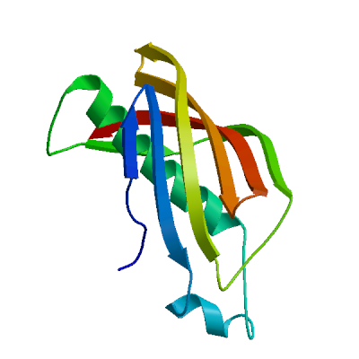
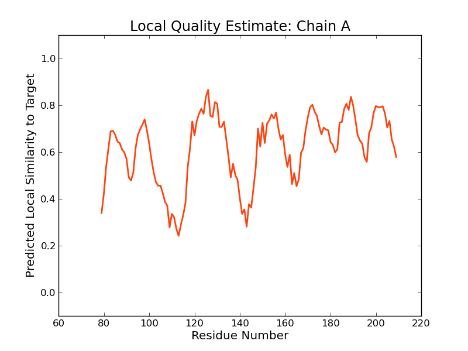
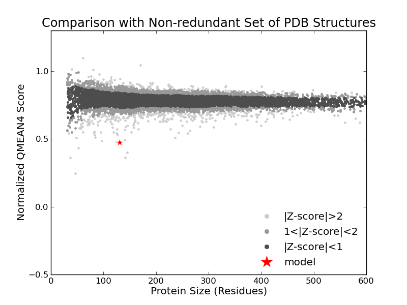

SWISS-MODEL Homology Modelling Report |
Model Building Report
This document lists the results for the homology modelling project "T451DRAFT_0805" submitted to SWISS-MODEL workspace on July 14, 2017, 9:13 p.m..The submitted primary amino acid sequence is given in Table T1.
If you use any results in your research, please cite the relevant publications:
Marco Biasini; Stefan Bienert; Andrew Waterhouse; Konstantin Arnold; Gabriel Studer; Tobias Schmidt; Florian Kiefer; Tiziano Gallo Cassarino; Martino Bertoni; Lorenza Bordoli; Torsten Schwede. (2014). SWISS-MODEL: modelling protein tertiary and quaternary structure using evolutionary information. Nucleic Acids Research (1 July 2014) 42 (W1): W252-W258; doi: 10.1093/nar/gku340.Arnold, K., Bordoli, L., Kopp, J. and Schwede, T. (2006) The SWISS-MODEL workspace: a web-based environment for protein structure homology modelling. Bioinformatics, 22, 195-201.
Benkert, P., Biasini, M. and Schwede, T. (2011) Toward the estimation of the absolute quality of individual protein structure models. Bioinformatics, 27, 343-350
Results
The SWISS-MODEL template library (SMTL version 2017-07-12, PDB release 2017-07-07) was searched with Blast (Altschul et al., 1997) and HHBlits (Remmert, et al., 2011) for evolutionary related structures matching the target sequence in Table T1. For details on the template search, see Materials and Methods. Overall 118 templates were found (Table T2).
Models
The following model was built (see Materials and Methods "Model Building"):
Model #01 | File | Built with | Oligo-State | Ligands | GMQE | QMEAN |
|---|---|---|---|---|---|---|
|  | PDB | ProMod3 Version 1.0.2. | MONOMER (matching prediction) | None | 0.27 | -5.72 |
|  |  |
| Template | Seq Identity | Oligo-state | Found by | Method | Resolution | Seq Similarity | Range | Coverage | Description |
|---|---|---|---|---|---|---|---|---|---|
| 1u1z.1.B | 14.17 | homo-hexamer | HHblits | X-ray | 2.50Å | 0.27 | 0.55 | (3R)-hydroxymyristoyl-[acyl carrier protein] dehydratase |
| Ligand | Added to Model | Description |
|---|---|---|
| SO4 | ✕ - Not biologically relevant. | SULFATE ION |
| SO4 | ✕ - Not biologically relevant. | SULFATE ION |
| SO4 | ✕ - Not biologically relevant. | SULFATE ION |
| SO4 | ✕ - Not biologically relevant. | SULFATE ION |
| SO4 | ✕ - Not biologically relevant. | SULFATE ION |
Target MSKKMILVGDQFKEFANEESVLTLTHFRSAYQQDKNINSRIVVGQGLSHDEVNHWRNSGLNVEAPSNPASLKVTHKHHLD
1u1z.1.B ------------------------------------------------------------------------------YP
Target HVMISEPKKGE--AFNYQMDLMLNDETDRLLDHITSL-HVSGMVLIEAARQASIACTEIEYDF-LNREKPSGYTWTNMNV
1u1z.1.B FLLVDRVVELDIEGKRIRAYKNVSINEPFFNGHFPEHPIMPGVLIIEAMAQAAGILGF-KMLDVKPADGTLYYFVGSDKL
Target RFSQFIFPVPTRIELEIVERENNEKRFTLSSKVNFIQGDNAVCDMEMMFDVLPLKLINQIERRSSAKIIRNLTLTD
1u1z.1.B RFRQPVLP-GDQLQLHAKFISVK--RSIWKFDCHATVDDKPVCSAEIICAERK-----------------------
Materials and Methods
Template Search
Template search with Blast and HHBlits has been performed against the SWISS-MODEL template library (SMTL, last update: 2017-07-12, last included PDB release: 2017-07-07).
The target sequence was searched with BLAST (Altschul et al., 1997) against the primary amino acid sequence contained in the SMTL.
An initial HHblits profile has been built using the procedure outlined in (Remmert, et al., 2011), followed by 1 iteration of HHblits against NR20. The obtained profile has then be searched against all profiles of the SMTL. A total of 118 templates were found.
Template Selection
For each identified template, the template's quality has been predicted from features of the target-template alignment. The templates with the highest quality have then been selected for model building.
Model Building
Models are built based on the target-template alignment using ProMod3. Coordinates which are conserved between the target and the template are copied from the template to the model. Insertions and deletions are remodelled using a fragment library. Side chains are then rebuilt. Finally, the geometry of the resulting model is regularized by using a force field. In case loop modelling with ProMod3 fails, an alternative model is built with PROMOD-II (Guex, et al., 1997).
Model Quality Estimation
The global and per-residue model quality has been assessed using the QMEAN scoring function (Benkert, et al., 2011) . For improved performance, weights of the individual QMEAN terms have been trained specifically for SWISS-MODEL.
Ligand Modelling
Ligands present in the template structure are transferred by homology to the model when the following criteria are met (Gallo -Casserino, to be published): (a) The ligands are annotated as biologically relevant in the template library, (b) the ligand is in contact with the model, (c) the ligand is not clashing with the protein, (d) the residues in contact with the ligand are conserved between the target and the template. If any of these four criteria is not satisfied, a certain ligand will not be included in the model. The model summary includes information on why and which ligand has not been included.
Oligomeric State Conservation
Homo-oligomeric structure of the target protein is predicted based on the analysis of pairwise interfaces of the identified template structures. For each relevant interface between polypeptide chains (interfaces with more than 10 residue-residue interactions), the QscoreOligomer (Mariani et al., 2011) is predicted from features such as similarity to target and frequency of observing this interface in the identified templates (Kiefer, Bertoni, Biasini, to be published). The prediction is performed with a random forest regressor using these features as input parameters to predict the probability of conservation for each interface. The QscoreOligomer of the whole complex is then calculated as the weight-averaged QscoreOligomer of the interfaces. The oligomeric state of the target is predicted to be the same as in the template when QscoreOligomer is predicted to be higher or equal to 0.5.
References
Altschul, S.F., Madden, T.L., Schaffer, A.A., Zhang, J., Zhang, Z., Miller, W. and Lipman, D.J. (1997) Gapped BLAST and PSI-BLAST: a new generation of protein database search programs. Nucleic Acids Res, 25, 3389-3402.
Remmert, M., Biegert, A., Hauser, A. and Soding, J. (2012) HHblits: lightning-fast iterative protein sequence searching by HMM-HMM alignment. Nat Methods, 9, 173-175.
Guex, N. and Peitsch, M.C. (1997) SWISS-MODEL and the Swiss-PdbViewer: an environment for comparative protein modeling. Electrophoresis, 18, 2714-2723.
Sali, A. and Blundell, T.L. (1993) Comparative protein modelling by satisfaction of spatial restraints. J Mol Biol, 234, 779-815.
Benkert, P., Biasini, M. and Schwede, T. (2011) Toward the estimation of the absolute quality of individual protein structure models. Bioinformatics, 27, 343-350.
Mariani, V., Kiefer, F., Schmidt, T., Haas, J. and Schwede, T. (2011) Assessment of template based protein structure predictions in CASP9. Proteins, 79 Suppl 10, 37-58.
Table T1:
Primary amino acid sequence for which templates were searched and models were built.
LNDETDRLLDHITSLHVSGMVLIEAARQASIACTEIEYDFLNREKPSGYTWTNMNVRFSQFIFPVPTRIELEIVERENNEKRFTLSSKVNFIQGDNAVCD
MEMMFDVLPLKLINQIERRSSAKIIRNLTLTD
Table T2:
| Template | Seq Identity | Oligo-state | Found by | Method | Resolution | Seq Similarity | Coverage | Description |
|---|---|---|---|---|---|---|---|---|
| 4h4g.1.A | 18.25 | homo-hexamer | HHblits | X-ray | 2.65Å | 0.28 | 0.54 | (3R)-hydroxymyristoyl-[acyl-carrier-protein] dehydratase |
| 1u1z.1.B | 14.17 | homo-hexamer | HHblits | X-ray | 2.50Å | 0.27 | 0.55 | (3R)-hydroxymyristoyl-[acyl carrier protein] dehydratase |
| 1u1z.1.A | 14.17 | homo-hexamer | HHblits | X-ray | 2.50Å | 0.27 | 0.55 | (3R)-hydroxymyristoyl-[acyl carrier protein] dehydratase |
| 1z6b.1.A | 11.02 | homo-dimer | HHblits | X-ray | 2.09Å | 0.25 | 0.55 | fatty acid synthesis protein |
| 3az9.1.E | 11.02 | homo-hexamer | HHblits | X-ray | 2.75Å | 0.25 | 0.55 | Beta-hydroxyacyl-ACP dehydratase |
| 3ed0.1.A | 12.10 | homo-hexamer | HHblits | X-ray | 2.30Å | 0.27 | 0.53 | (3R)-hydroxymyristoyl-acyl carrier protein dehydratase |
| 3ed0.1.B | 12.10 | homo-hexamer | HHblits | X-ray | 2.30Å | 0.27 | 0.53 | (3R)-hydroxymyristoyl-acyl carrier protein dehydratase |
| 3ed0.1.D | 12.10 | homo-hexamer | HHblits | X-ray | 2.30Å | 0.27 | 0.53 | (3R)-hydroxymyristoyl-acyl carrier protein dehydratase |
| 1zhg.1.A | 11.11 | homo-dimer | HHblits | X-ray | 2.40Å | 0.25 | 0.54 | beta hydroxyacyl-acyl carrier protein dehydratase |
| 1zhg.1.B | 11.11 | homo-dimer | HHblits | X-ray | 2.40Å | 0.25 | 0.54 | beta hydroxyacyl-acyl carrier protein dehydratase |
| 4i83.1.A | 13.71 | homo-hexamer | HHblits | X-ray | 2.60Å | 0.26 | 0.53 | 3-hydroxyacyl-[acyl-carrier-protein] dehydratase FabZ |
| 3d6x.1.A | 12.20 | homo-hexamer | HHblits | X-ray | 2.59Å | 0.27 | 0.53 | (3R)-hydroxymyristoyl-[acyl-carrier-protein] dehydratase |
| 5buy.1.A | 13.82 | homo-hexamer | HHblits | X-ray | 2.55Å | 0.27 | 0.53 | 3-hydroxyacyl-[acyl-carrier-protein] dehydratase FabZ |
| 5buy.1.C | 13.82 | homo-hexamer | HHblits | X-ray | 2.55Å | 0.27 | 0.53 | 3-hydroxyacyl-[acyl-carrier-protein] dehydratase FabZ |
| 5buy.1.D | 13.82 | homo-hexamer | HHblits | X-ray | 2.55Å | 0.27 | 0.53 | 3-hydroxyacyl-[acyl-carrier-protein] dehydratase FabZ |
| 5buy.1.F | 13.82 | homo-hexamer | HHblits | X-ray | 2.55Å | 0.27 | 0.53 | 3-hydroxyacyl-[acyl-carrier-protein] dehydratase FabZ |
| 4zw0.1.A | 14.05 | homo-hexamer | HHblits | X-ray | 2.90Å | 0.28 | 0.52 | 3-hydroxyacyl-[acyl-carrier-protein] dehydratase FabZ |
| 2glm.1.D | 12.40 | homo-hexamer | HHblits | X-ray | 2.60Å | 0.27 | 0.52 | (3R)-hydroxymyristoyl-acyl carrier protein dehydratase |
| 2glm.1.C | 12.40 | homo-hexamer | HHblits | X-ray | 2.60Å | 0.27 | 0.52 | (3R)-hydroxymyristoyl-acyl carrier protein dehydratase |
| 2glm.1.A | 12.40 | homo-hexamer | HHblits | X-ray | 2.60Å | 0.27 | 0.52 | (3R)-hydroxymyristoyl-acyl carrier protein dehydratase |
| 4zjb.1.B | 12.40 | hetero-oligomer | HHblits | X-ray | 2.55Å | 0.27 | 0.52 | 3-hydroxyacyl-[acyl-carrier-protein] dehydratase FabZ |
| 4zjb.1.A | 12.40 | hetero-oligomer | HHblits | X-ray | 2.55Å | 0.27 | 0.52 | 3-hydroxyacyl-[acyl-carrier-protein] dehydratase FabZ |
| 2glv.1.C | 11.57 | homo-hexamer | HHblits | X-ray | 2.50Å | 0.26 | 0.52 | (3R)-hydroxymyristoyl-acyl carrier protein dehydratase |
| 2glv.1.B | 11.57 | homo-hexamer | HHblits | X-ray | 2.50Å | 0.26 | 0.52 | (3R)-hydroxymyristoyl-acyl carrier protein dehydratase |
| 2glv.1.A | 11.57 | homo-hexamer | HHblits | X-ray | 2.50Å | 0.26 | 0.52 | (3R)-hydroxymyristoyl-acyl carrier protein dehydratase |
| 2glv.1.D | 11.57 | homo-hexamer | HHblits | X-ray | 2.50Å | 0.26 | 0.52 | (3R)-hydroxymyristoyl-acyl carrier protein dehydratase |
| 2glv.1.E | 11.57 | homo-hexamer | HHblits | X-ray | 2.50Å | 0.26 | 0.52 | (3R)-hydroxymyristoyl-acyl carrier protein dehydratase |
| 2f3x.1.A | 13.68 | homo-dimer | HHblits | X-ray | 3.10Å | 0.26 | 0.50 | Transcription factor fapR |
| 2f3x.1.B | 13.68 | homo-dimer | HHblits | X-ray | 3.10Å | 0.26 | 0.50 | Transcription factor fapR |
| 1ixl.1.A | 16.81 | monomer | HHblits | X-ray | 1.94Å | 0.28 | 0.49 | hypothetical protein PH1136 |
| 4a0x.1.A | 12.93 | homo-hexamer | HHblits | X-ray | 2.40Å | 0.26 | 0.50 | TRANSCRIPTION FACTOR FAPR |
| 4a0y.1.A | 12.93 | homo-tetramer | HHblits | X-ray | 2.60Å | 0.26 | 0.50 | TRANSCRIPTION FACTOR FAPR |
| 4a0y.1.B | 12.93 | homo-tetramer | HHblits | X-ray | 2.60Å | 0.26 | 0.50 | TRANSCRIPTION FACTOR FAPR |
| 4a0z.1.A | 12.93 | homo-dimer | HHblits | X-ray | 1.90Å | 0.26 | 0.50 | TRANSCRIPTION FACTOR FAPR |
| 4a12.1.A | 12.93 | homo-tetramer | HHblits | X-ray | 3.15Å | 0.26 | 0.50 | TRANSCRIPTION FACTOR FAPR |
| 4a12.1.B | 12.93 | homo-tetramer | HHblits | X-ray | 3.15Å | 0.26 | 0.50 | TRANSCRIPTION FACTOR FAPR |
| 2f41.1.A | 14.04 | homo-dimer | HHblits | X-ray | 2.50Å | 0.26 | 0.49 | Transcription factor fapR |
| 3r3c.1.A | 12.61 | homo-tetramer | HHblits | X-ray | 1.80Å | 0.26 | 0.48 | 4-hydroxybenzoyl-CoA thioesterase |
| 3lwg.1.A | 13.64 | homo-dimer | HHblits | X-ray | 1.80Å | 0.26 | 0.47 | HP0420 homologue |
| 3lwg.1.B | 13.64 | homo-dimer | HHblits | X-ray | 1.80Å | 0.26 | 0.47 | HP0420 homologue |
| 3lw3.1.A | 13.64 | homo-dimer | HHblits | X-ray | 1.60Å | 0.26 | 0.47 | HP0420 homologue |
| 3lw3.1.B | 13.64 | homo-dimer | HHblits | X-ray | 1.60Å | 0.26 | 0.47 | HP0420 homologue |
| 3r35.1.A | 13.64 | homo-tetramer | HHblits | X-ray | 1.80Å | 0.26 | 0.47 | 4-hydroxybenzoyl-CoA thioesterase |
| 3esi.1.A | 16.35 | homo-tetramer | HHblits | X-ray | 2.50Å | 0.30 | 0.45 | uncharacterized protein |
| 2okh.1.A | 11.71 | homo-dimer | HHblits | X-ray | 3.00Å | 0.25 | 0.48 | Beta-hydroxyacyl-ACP dehydratase |
| 2okh.1.B | 11.71 | homo-dimer | HHblits | X-ray | 3.00Å | 0.25 | 0.48 | Beta-hydroxyacyl-ACP dehydratase |
| 2oki.1.B | 11.71 | homo-dimer | HHblits | X-ray | 2.70Å | 0.25 | 0.48 | Beta-hydroxyacyl-ACP dehydratase |
| 2pim.1.A | 18.69 | homo-dimer | HHblits | X-ray | 2.20Å | 0.27 | 0.46 | Phenylacetic acid degradation-related protein |
| 2prx.1.A | 12.73 | homo-dimer | HHblits | X-ray | 1.50Å | 0.25 | 0.47 | Thioesterase superfamily protein |
| 3r32.1.A | 12.84 | homo-tetramer | HHblits | X-ray | 1.80Å | 0.26 | 0.47 | 4-hydroxybenzoyl-CoA thioesterase |
| 2oaf.1.A | 11.82 | homo-tetramer | HHblits | X-ray | 2.00Å | 0.25 | 0.47 | Thioesterase superfamily |
| 2hbo.1.A | 10.09 | homo-dimer | HHblits | X-ray | 1.85Å | 0.25 | 0.47 | Hypothetical protein (np_422103.1) |
| 1yoc.1.A | 14.81 | homo-dimer | HHblits | X-ray | 1.70Å | 0.25 | 0.47 | hypothetical protein PA1835 |
| 1yoc.1.B | 14.81 | homo-dimer | HHblits | X-ray | 1.70Å | 0.25 | 0.47 | hypothetical protein PA1835 |
| 5byu.1.A | 8.41 | homo-tetramer | HHblits | X-ray | 2.40Å | 0.25 | 0.46 | Thioesterase |
| 5byu.1.C | 8.41 | homo-tetramer | HHblits | X-ray | 2.40Å | 0.25 | 0.46 | Thioesterase |
| 5byu.1.D | 8.41 | homo-tetramer | HHblits | X-ray | 2.40Å | 0.25 | 0.46 | Thioesterase |
| 5byu.2.A | 8.41 | homo-tetramer | HHblits | X-ray | 2.40Å | 0.25 | 0.46 | Thioesterase |
| 5byu.2.B | 8.41 | homo-tetramer | HHblits | X-ray | 2.40Å | 0.25 | 0.46 | Thioesterase |
| 5byu.2.D | 8.41 | homo-tetramer | HHblits | X-ray | 2.40Å | 0.25 | 0.46 | Thioesterase |
| 2dsl.1.A | 15.09 | homo-tetramer | HHblits | X-ray | 1.70Å | 0.25 | 0.46 | Phenylacetic acid degradation protein PaaI |
| 3gek.1.B | 7.55 | homo-tetramer | HHblits | X-ray | 2.24Å | 0.25 | 0.46 | Putative thioesterase yhdA |
| 3gek.1.A | 7.55 | homo-tetramer | HHblits | X-ray | 2.24Å | 0.25 | 0.46 | Putative thioesterase yhdA |
| 4r9z.1.A | 20.20 | homo-dimer | HHblits | X-ray | 2.60Å | 0.31 | 0.43 | Uncharacterized protein |
| 3f1t.1.A | 6.54 | homo-tetramer | HHblits | X-ray | 2.20Å | 0.24 | 0.46 | uncharacterized protein Q9I3C8_PSEAE |
| 3f1t.1.C | 6.54 | homo-tetramer | HHblits | X-ray | 2.20Å | 0.24 | 0.46 | uncharacterized protein Q9I3C8_PSEAE |
| 3f1t.1.D | 6.54 | homo-tetramer | HHblits | X-ray | 2.20Å | 0.24 | 0.46 | uncharacterized protein Q9I3C8_PSEAE |
| 1zki.1.A | 12.38 | homo-dimer | HHblits | X-ray | 1.70Å | 0.25 | 0.45 | hypothetical protein PA5202 |
| 3u0a.1.A | 14.71 | homo-dimer | HHblits | X-ray | 2.50Å | 0.27 | 0.44 | Acyl-CoA thioesterase II TesB2 |
| 3u0a.1.B | 14.71 | homo-dimer | HHblits | X-ray | 2.50Å | 0.27 | 0.44 | Acyl-CoA thioesterase II TesB2 |
| 4r4u.1.A | 18.00 | homo-dimer | HHblits | X-ray | 2.20Å | 0.28 | 0.43 | Acyl-CoA thioesterase II |
| 1c8u.1.A | 18.18 | homo-dimer | HHblits | X-ray | 1.90Å | 0.28 | 0.43 | ACYL-COA THIOESTERASE II |
| 1wn3.1.A | 11.54 | homo-tetramer | HHblits | X-ray | 2.10Å | 0.24 | 0.45 | phenylacetic acid degradation protein PaaI |
| 1wn3.1.D | 11.54 | homo-tetramer | HHblits | X-ray | 2.10Å | 0.24 | 0.45 | phenylacetic acid degradation protein PaaI |
| 1wn3.2.B | 11.54 | homo-tetramer | HHblits | X-ray | 2.10Å | 0.24 | 0.45 | phenylacetic acid degradation protein PaaI |
| 1wlu.1.A | 11.54 | homo-tetramer | HHblits | X-ray | 1.45Å | 0.24 | 0.45 | phenylacetic acid degradation protein PaaI |
| 4qfw.1.A | 17.17 | homo-tetramer | HHblits | X-ray | 2.00Å | 0.27 | 0.43 | Acyl-CoA thioesterase II |
| 3rd7.1.A | 16.33 | homo-dimer | HHblits | X-ray | 1.95Å | 0.28 | 0.42 | Acyl-CoA thioesterase |
| 3bbj.1.A | 11.11 | homo-dimer | HHblits | X-ray | 2.16Å | 0.26 | 0.43 | Putative thioesterase II |
| 3bbj.1.B | 11.11 | homo-dimer | HHblits | X-ray | 2.16Å | 0.26 | 0.43 | Putative thioesterase II |
| 2egi.1.A | 12.77 | homo-tetramer | HHblits | X-ray | 2.30Å | 0.26 | 0.41 | Hypothetical protein aq_1494 |
| 2egi.1.D | 12.77 | homo-tetramer | HHblits | X-ray | 2.30Å | 0.26 | 0.41 | Hypothetical protein aq_1494 |
| 4gah.1.A | 10.87 | homo-dimer | HHblits | X-ray | 2.30Å | 0.25 | 0.40 | Thioesterase superfamily member 4 |
| 4gah.1.B | 10.87 | homo-dimer | HHblits | X-ray | 2.30Å | 0.25 | 0.40 | Thioesterase superfamily member 4 |
| 2cye.1.A | 12.09 | homo-dimer | HHblits | X-ray | 1.90Å | 0.25 | 0.39 | Putative thioesterase |
| 2cye.1.B | 12.09 | homo-dimer | HHblits | X-ray | 1.90Å | 0.25 | 0.39 | Putative thioesterase |
| 2cye.2.A | 12.09 | homo-dimer | HHblits | X-ray | 1.90Å | 0.25 | 0.39 | Putative thioesterase |
| 2cye.2.B | 12.09 | homo-dimer | HHblits | X-ray | 1.90Å | 0.25 | 0.39 | Putative thioesterase |
| 2hx5.1.A | 6.90 | homo-tetramer | HHblits | X-ray | 1.50Å | 0.24 | 0.38 | Hypothetical protein |
| 2gf6.1.A | 9.41 | homo-tetramer | HHblits | X-ray | 1.91Å | 0.24 | 0.37 | Conserved hypothetical protein |
| 2gf6.2.A | 9.41 | homo-tetramer | HHblits | X-ray | 1.91Å | 0.24 | 0.37 | Conserved hypothetical protein |
| 4ae7.1.A | 13.10 | homo-dimer | HHblits | X-ray | 1.45Å | 0.25 | 0.36 | THIOESTERASE SUPERFAMILY MEMBER 5 |
| 5dio.1.A | 9.64 | homo-tetramer | HHblits | X-ray | 2.60Å | 0.25 | 0.36 | Thioesterase |
| 5dio.1.B | 9.64 | homo-tetramer | HHblits | X-ray | 2.60Å | 0.25 | 0.36 | Thioesterase |
| 3ir3.1.A | 9.88 | homo-dimer | HHblits | X-ray | 1.99Å | 0.26 | 0.35 | 3-hydroxyacyl-thioester dehydratase 2 |
| 3ir3.1.B | 9.88 | homo-dimer | HHblits | X-ray | 1.99Å | 0.26 | 0.35 | 3-hydroxyacyl-thioester dehydratase 2 |
| 2oiw.1.A | 13.75 | homo-tetramer | HHblits | X-ray | 2.00Å | 0.25 | 0.34 | putative 4-hydroxybenzoyl-CoA thioesterase |
| 2oiw.1.C | 13.75 | homo-tetramer | HHblits | X-ray | 2.00Å | 0.25 | 0.34 | putative 4-hydroxybenzoyl-CoA thioesterase |
| 3kx7.1.A | 15.15 | homo-dimer | HHblits | X-ray | 1.70Å | 0.26 | 0.28 | Fluoroacetyl-CoA thioesterase FlK |
| 3kv8.1.A | 15.15 | homo-dimer | HHblits | X-ray | 1.85Å | 0.26 | 0.28 | Fluoroacetyl-CoA thioesterase FlK |
| 3kv8.1.B | 15.15 | homo-dimer | HHblits | X-ray | 1.85Å | 0.26 | 0.28 | Fluoroacetyl-CoA thioesterase FlK |
| 3kuv.1.A | 15.38 | homo-dimer | HHblits | X-ray | 1.50Å | 0.26 | 0.28 | Fluoroacetyl coenzyme A thioesterase |
| 3kuv.1.B | 15.38 | homo-dimer | HHblits | X-ray | 1.50Å | 0.26 | 0.28 | Fluoroacetyl coenzyme A thioesterase |
| 3kvu.1.A | 15.38 | homo-dimer | HHblits | X-ray | 2.00Å | 0.26 | 0.28 | Fluoroacetyl-CoA thioesterase FlK |
| 3kvu.1.B | 15.38 | homo-dimer | HHblits | X-ray | 2.00Å | 0.26 | 0.28 | Fluoroacetyl-CoA thioesterase FlK |
| 3kvi.1.A | 15.38 | homo-dimer | HHblits | X-ray | 1.76Å | 0.26 | 0.28 | Fluoroacetyl-CoA thioesterase FlK |
| 3kvi.1.B | 15.38 | homo-dimer | HHblits | X-ray | 1.76Å | 0.26 | 0.28 | Fluoroacetyl-CoA thioesterase FlK |
| 3qoo.1.A | 10.77 | homo-dimer | HHblits | X-ray | 1.25Å | 0.24 | 0.28 | Uncharacterized protein |
| 3hm0.1.A | 6.45 | homo-tetramer | HHblits | X-ray | 2.50Å | 0.25 | 0.27 | Probable Thioesterase |
| 1z54.1.A | 4.84 | homo-tetramer | HHblits | X-ray | 2.10Å | 0.23 | 0.27 | probable thioesterase |
| 1z54.1.B | 4.84 | homo-tetramer | HHblits | X-ray | 2.10Å | 0.23 | 0.27 | probable thioesterase |
| 1z54.1.D | 4.84 | homo-tetramer | HHblits | X-ray | 2.10Å | 0.23 | 0.27 | probable thioesterase |
| 3rqb.1.A | 17.54 | homo-dimer | HHblits | X-ray | 2.80Å | 0.28 | 0.25 | Uncharacterized protein |
| 1tbu.1.A | 16.36 | homo-tetramer | HHblits | X-ray | 2.20Å | 0.29 | 0.24 | Peroxisomal acyl-coenzyme A thioester hydrolase 1 |
| 1tbu.1.B | 16.36 | homo-tetramer | HHblits | X-ray | 2.20Å | 0.29 | 0.24 | Peroxisomal acyl-coenzyme A thioester hydrolase 1 |
| 1tbu.1.D | 16.36 | homo-tetramer | HHblits | X-ray | 2.20Å | 0.29 | 0.24 | Peroxisomal acyl-coenzyme A thioester hydrolase 1 |
| 3cjy.1.A | 12.50 | homo-dimer | HHblits | X-ray | 1.70Å | 0.26 | 0.24 | Putative thioesterase |
| 5kpe.1.A | 43.75 | monomer | HHblits | NMR | NA | 0.42 | 0.07 | De novo Beta Sheet Design Protein OR664 |